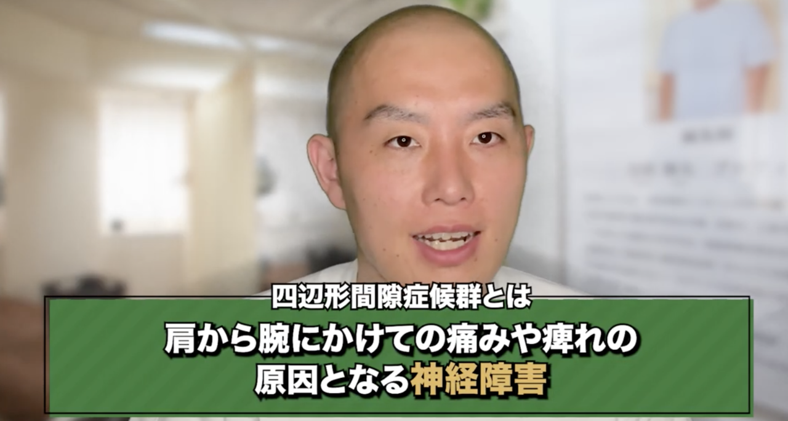
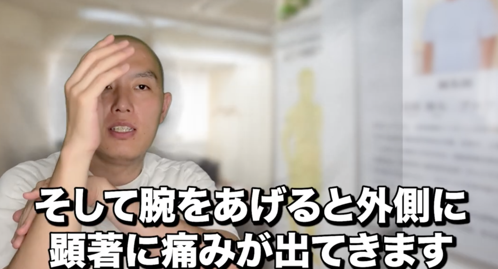
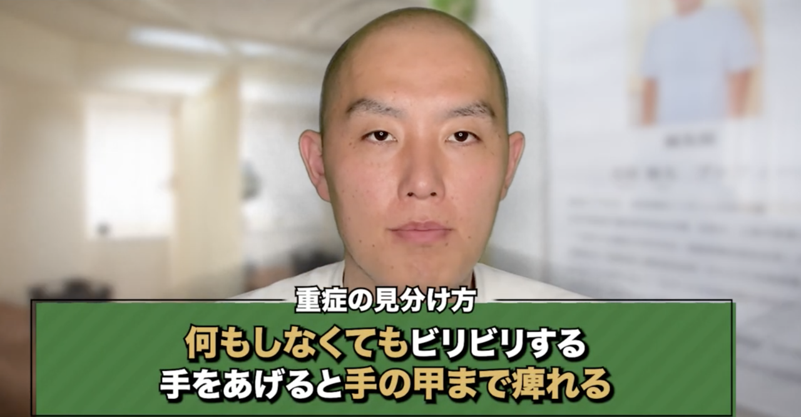
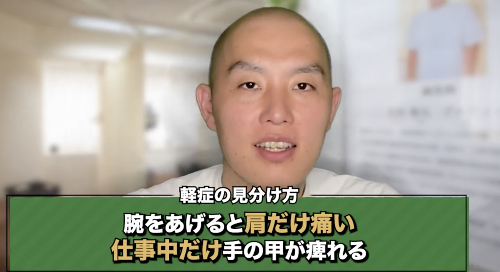
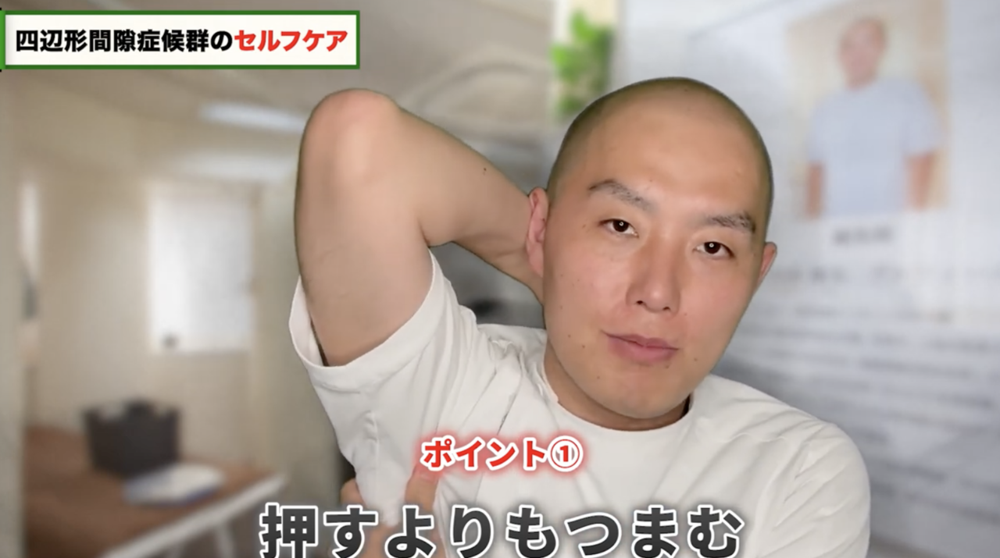
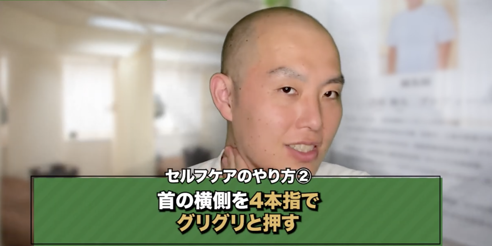

四辺形間隙症候群の鍼灸
肩甲骨外側の間隙で腋窩神経・橈骨神経が圧迫される障害。肩周囲の過緊張を鍼灸で緩和します。
まず知っておきたい要点と改善の流れ
肩甲骨外側の四辺形間隙（上腕三頭筋長頭・大円筋・小円筋・上腕骨で構成）を囲む筋肉の過緊張により、腋窩神経や橈骨神経が圧迫されて起こる障害です。野球の投球やテニス・バレーボールのサーブなど腕を反復して上げる動作、転倒や事故による肩の打撲、姿勢不良や栄養不足、先天的な間隙の狭さや腫瘍・嚢胞が原因となります。（公式解説）
このようなお悩みはありませんか？
- ✓肩の後ろ側から外側にかけて痛みがあり徐々に広がっている
- ✓腕を上げる動作で痛みが増し、夜間にうずくことがある
- ✓二の腕から肘の外側、手の甲にかけてしびれを感じる
- ✓肩や腕に力が入りにくく、首のヘルニアと区別がつかない
当院の施術アプローチ・改善の流れ
なぜ鍼灸で改善へ向かうのか？（作用機序の図解）
四辺形間隙症候群に対する鍼灸は、トリガーポイント解放と疼痛抑制系の作用機序を通じて、お体本来の回復力を引き出します。

手技では届きにくい深層筋の硬結（トリガーポイント）へ繊細な鍼で直接刺激を届けます。
CGRPや一酸化窒素の放出により微小血管が拡張し、滞っていた発痛物質の洗い流しを促します。
脊髄後角で痛み信号を遮断し、脳幹からの内因性鎮痛物質（エンドルフィン等）の働きを高めます。
防御性の筋スパズムが解け、関節可動域と本来の動きやすさが段階的に回復します。
院長YouTube解説・関連動画
四辺形間隙症候群は腋窩神経や橈骨神経が圧迫され障害が起こる

四辺形間隙症候群は、四辺形間隙を囲っている上腕三頭筋、大円筋、小円筋の中の筋肉が常に緊張し、腋窩神経や橈骨神経が絞めつけられたり圧迫されたりして障害が起こることです。
四辺形間隙症候群は肩から腕にかけての痛みや痺れの原因となる神経障害のことです。早めに対処することでパフォーマンスや日常生活の質の向上が目指せます。
四辺形間隙は肩甲骨の外側にある筋肉によって構成されるスペースのことです。具体的には上腕三頭筋長頭、大円筋、小円筋、上腕骨という４つの骨と筋肉によって構成されています。
四辺形間隙には腋窩神経と橈骨神経が通っており、腕や手に向かって走行しています。この２つの神経が筋肉によって圧迫されることによって肩や手にかけての痛みや痺れが発生するのです。
上腕三頭筋、大円筋、小円筋の中の筋肉が１つでも過剰に緊張することで四辺形間隙症候群を発症することもあれば、複数の筋肉が過剰に緊張することで発症することもあります。
四辺形間隙症候群の症状は、肩の後ろ側から外側の痛み
四辺形間隙は、腋窩神経と橈骨神経が筋肉によって圧迫されることによって肩や手にかけての痛みや痺れが発生します。痛みや痺れは主に肩の外側に発生します。
三角筋から肘の外側を通って手の甲が痺れてしまう症状が見られ、ひどい場合は下垂手が起こることもあります。下垂手では、手がぶらぶらとして動かなくなり、手をそ反ることができなくなります。
肩の後ろ側から外側の痛みが起こる四辺形間隙症候群では、突然症状が強く現れることはありません。少しずつ痛みが肩の後ろ側から外側に広がっていき、場合によっては、二の腕から手の甲や指先にしびれや痛みが現れることもあります。
腕を上げると症状が悪くなるため、高い場所にある物を取ったり、上着の着脱をしたりすることが難しくなります。
さらに悪くなり神経が麻痺すると、肩の外側の感覚に異常が起こったり筋力が低下したり筋肉が萎縮したりすることもあります。
腕を上げると外側に顕著に痛みが出る場合は早めに対処が必要です。神経が圧迫されていると、痛み、痺れ、麻痺といった３段階で悪くなります。痛みと痺れまでで改善している場合は良いですが麻痺してしまうと下垂手が起こります。

肩や上腕の痛み: 多くの場合は、肩や上腕の特定の部位に痛みを感じます。この痛みは、特に上腕を上げるとき、重いものを持ち上げるときや、投げる動作をするときに強くなることが多いです。
上腕のしびれや感覚異常: 腋窩神経が圧迫されることで、上腕の外側や後部にしびれや感覚異常が生じることがあります。特定の動作や姿勢でしびれが強くなることを報告することが多いです。
筋力の低下: 腋窩神経が供給する筋肉、特に三角筋や上腕二頭筋の筋力が低下することがあります。これは、特に物を持ち上げたり、投げる動作をする際に顕著になることが多いです。
疲労感: 肩や上腕に疲労感を感じることがあり、日常生活やスポーツ活動が困難になることがあります。
夜間の症状増悪: 多くの場合は、夜間に症状が増悪することを報告しています。これは、寝ている間に肩の位置や圧迫が増加することで引き起こされると考えられています。
症状の持続性: 一部では、症状が数週間から数ヶ月にわたって持続することを報告しています。一方で、症状が数日間で消失することもあります。
四辺形間隙症候群の判断は、身体や画像を見て行われます。そして、理学療法や手術、栄養学、鍼灸などで改善を行います。
改善には、消炎鎮痛剤や筋弛緩薬、ビタミン剤や血流を良くする薬を使います。
痛みが強い場合は、ブロック注射をおこなうこともあります。ただし、ブロック注射の効果は人によって違います。効果が非常に長く続く人もいれば、すぐに効果を感じなくなる人もいます。
症状が悪くなり日常生活を送る上で問題が起こる場合は、手術で神経の剥離をおこなうこともあります。
1. 保存的な改善方法
多くの場合、初期には保存的な改善方法を中心とします。
休息: 負担を軽減するために、肩や上腕の動作を避けることが推奨されます。
ストレッチやエクササイズ: 筋肉のストレッチや強化を促すエクササイズを行うことで、四辺形間隙の圧迫を減少させることが期待されます。
炎症や痛みの管理: NSAIDs（非ステロイド系抗炎症薬）や鎮痛薬を使用して、炎症や痛みを管理することが推奨されることがあります。
2. ステロイド注射
痛みや炎症の重症度に応じて、四辺形間隙周辺にステロイドを注射することで、症状の緩和を目指すことがあります。ただし、繰り返しの注射は、組織の損傷を引き起こすリスクがあるため、慎重に行われる必要があります。
3. 手術
保存的方法に応じない場合や、原因が明確な構造的異常の場合、手術が選択されることがあります。
解剖学的変異の修正: 四辺形間隙が生まれつき狭い場合や、瘢痕組織が原因で圧迫されている場合、その原因となる構造的異常を修正する手術が行われることがあります。
腫瘍や嚢胞の除去: この領域に腫瘍や嚢胞が存在する場合、それらを除去する手術が必要となることがあります。
4. 痛み管理
慢性的な痛みを伴う場合、痛みクリニックでのマルチモーダルな痛み管理が提案されることがあります。これには、薬やエクササイズ、リラクゼーションや瞑想など、および他の方法が含まれることがあります。
5. 教育と生活習慣の変更
教育は改善の一部として非常に重要です。病態や予後、再発予防のための生活習慣の変更について教えることで、QSSの管理と予防に役立ちます。
〈エクササイズの目的〉
筋肉の柔軟性を向上させる: 緊張した筋肉や筋膜が神経や血管を圧迫することを減少させる。
筋肉の強化: 筋力を向上させることで、四辺形間隙の安定性を高める。
姿勢の改善: 正しい姿勢を維持することで、筋肉のバランスを取り戻し、圧迫を防ぐ。
血流の促進: 血流を向上させることで、回復を促進する。
〈具体的なエクササイズ方法〉
・ストレッチ
肩のストレッチ: 両手を前に伸ばし、手のひらを合わせ、しっかりと伸ばして5-10秒間保持します。次に、両手を頭上に持ち上げて、同様に5〜10秒間保持します。
胸筋ストレッチ: ドアフレームに腕を乗せて、体をゆっくりと前に進めることで、胸筋を伸ばします。
強化エクササイズ:バンドを使用した外旋: ゴムバンドを手に持ち、肘を90度に曲げて、手を外側に向けて動かします。
ショルダープレス: ダンベルや抵抗バンドを使用して、両手を頭上に持ち上げます。
・筋膜リリース
フォームローラー: 背中や肩の部分にフォームローラーを置き、ゆっくりとローリングして筋膜の緊張を和らげます。
姿勢改善のエクササイズ:壁に背中をつける: 背中と頭、お尻、かかとが壁に触れるように立ち、この姿勢を数分間保持します。
肩甲骨のピンチ: 肩甲骨を後ろで近づけるようにし、この位置を数秒間保持します。
・呼吸エクササイズ
深呼吸を繰り返し行い、リラックスしながら胸部や上背部の筋肉を伸ばします。
四辺形間隙症候群の重症度合い
四辺形間隙症候群は、病院で病名の判断をされることはありません。腕が痺れると整形外科に行き、首のレントゲンを撮り、メチコバールや筋弛緩剤、リリカをもらって様子を見るパターンが一般的です。
しかし、四辺形間隙症候群は、首が原因ではありません。レントゲンでヘルニアであると言われて悩んでいる人や骨で判断するため異常がなければ筋肉に異常があるとされる人がほとんどです。
この場合の多くは、肩甲骨が原因である四辺形間隙症候群です。
四辺形間隙症候群の重症度合いはあらかじめ決まっています。何もしなくてもビリビリする場合、手を上げると手の甲まで痺れる場合は重症です。腕を上げると肩だけ痛い場合、仕事中だけ手の甲が痺れる場合は軽症です。
バンザイして手の甲が痺れるレベルの人は下記のセルフケアを行っていただきたいです。


四辺形間隙症候群のセルフケア

①症状のある方の手を頭の後ろに乗せる。
②反対の手で肩甲骨の外側をつまむ。
※押すよりもつまむことが大事で、つまむ範囲は外側と二の腕も一緒につまみます。
③１分行ったらバンザイしてみる。
このセルフケアを行うことで、手の痺れが出にくくなったり出なくなったりします。1日3回朝昼晩行いましょう。
ただし、行いすぎると体が拒否反応を起こして悪化することもあるため１分ほどにしましょう。
圧迫している筋肉を緩めることで症状が改善するのです。筋肉には以前の状態に戻ろうとする癖がありますが、ぐいぐいやり続けると必ず症状は取れます。

首からくるパターンもあります。その場合上記のセルフケアは効果がありません。
首からきているかどうかの判断は、上を見いて手まで痺れるかどうかを確認することです。手まで痺れる場合は首からきているため、首のアプローチが必要です。
その場合は、首の横側を４本指で押しましょう。この方法も1日3回朝昼晩行います。
投球時や投球後に、肩の外側が痛い、腕や手が痺れるなどの症状が見られた場合は、四辺形間隙症候群の可能性があります。
手の痺れや脇の下の痛み、寝返りをした時の腕や肩の痛みなどがある場合や、手や腕に力が入らない、腕を上に挙げるのが辛いなどの症状がある場合などは病院に行くことをお勧めします。
首・肩・上腕のツボ図解とセルフケア
実際の施術ではお一人おひとりの体質・症状に合わせて選穴しますが、首・肩・上腕（肩関節・頸椎・肩甲帯）の筋骨格系トラブルの臨床でよく用いられる代表的なツボの目安です。

📌 代表的なツボの詳細一覧表を開く（6穴） ▼
| ツボ名 | 位置の目安 | 主な狙い | セルフケアの注意点 |
|---|---|---|---|
| 肩髃（けんぐう） | 腕を横に挙げたときに肩の前の角にできるくぼみ | 上腕二頭筋長頭腱炎・五十肩・肩関節周囲の痛みと可動域改善 | 炎症や夜間痛が強い時期は強く揉み込まず、温めや軽い圧迫に留めます。 |
| 臂臑（ひじゅ） | 肩の三角筋の先端（腕の外側の境目のくぼみ） | 上腕の重だるさ・腕を上げる際の引っかかり感・肩関節の負担軽減 | 骨に向かって垂直に3〜5秒じんわり押す程度が安全です。 |
| 天宗（てんそう） | 肩甲骨のほぼ中央、押すと響くくぼみ | 肩甲骨周囲の深層筋（棘下筋）の緊張緩和・腕への放散痛ケア | テニスボール等で強く押しすぎず、心地よい響きで止めます。 |
| 肩井（けんせい） | 首の付け根と肩先を結んだ線の中央 | 僧帽筋の過緊張緩和・首肩のこりや張り改善 | 妊娠中の方は強い刺激を避け、優しく温める程度にしてください。 |
| 風池（ふうち） | 後頭部の生え際、耳の後ろの骨と首筋の間のくぼみ | 頸椎周囲の深層筋緊張・首こり・肩腕への神経負担緩和 | 親指で頭の中心に向かって優しく支えるように押します。 |
| 曲池（きょくち） | 肘を曲げたときにできる外側のシワの先端 | 上腕〜前腕の筋膜連動の調整・肩肘の炎症・だるさ軽減 | 反対側の親指でゆっくり5秒押して離すリズムで行います。 |
国際査読論文の科学的エビデンス
国際的な医学データベース（PubMed・Cochrane等）で報告されている首・肩・上腕（肩関節・頸椎・肩甲帯）の筋骨格系トラブル領域の代表的な査読済み鍼灸研究をまとめています（標準治療との併用や研究上の限界を含めて正確に掲載）。
📚 査読論文データ・PubMed出典リンクを開く（4件） ▼
| 年・研究デザイン | 対象・規模 | 主な結果 | 限界・出典 |
|---|---|---|---|
| 2018年 IPDメタ解析 | 慢性筋骨格痛・頭痛 39 RCTs（n=20,827） | 全領域でシャム鍼・無治療比とも有意優位（P<0.001）、1年後も効果低下約15%で持続。 | 対照設定により効果量変動。 J Pain (PMID: 29198932) |
| 2020年 Cochraneレビュー | 慢性非特異的腰痛 33 RCTs（n=8,270） | 無治療比で直後疼痛（MD -20.32）と機能（SMD -0.53）が臨床的に有意改善。有害事象は軽微。 | 施術者盲検化不可・確実性は中等度〜非常に低。 Cochrane (PMID: 33306198) |
| 2024年 多施設RCT | 慢性坐骨神経痛 216名（6病院・52週追跡） | 4週時点の下肢痛VAS減少30.8mm vs 14.9mm（差-16.0mm, P<0.001）、52週後も持続。 | 中国3次病院限定・施術者盲検化不可。 JAMA Intern Med (PMID: 39401008) |
| 2016年 メタ解析 | 変形性膝関節症 10 RCTs | 短期（13週）で疼痛（WMD -1.24, p<0.001）と機能（p<0.001）が有意改善、26週も機能維持（p=0.016）。 | 試験間の異質性が高く運動療法併用が推奨。 JBJS Am (PMID: 27655986) |
参考文献・出典
- 銀座そうぜん鍼灸院「四辺形間隙症候群の公式解説ページ」
- 2018年 IPDメタ解析（慢性筋骨格痛・頭痛 39 RCTs（n=20,827））— J Pain (PMID: 29198932)
- 2020年 Cochraneレビュー（慢性非特異的腰痛 33 RCTs（n=8,270））— Cochrane (PMID: 33306198)
- 2024年 多施設RCT（慢性坐骨神経痛 216名（6病院・52週追跡））— JAMA Intern Med (PMID: 39401008)
- 2016年 メタ解析（変形性膝関節症 10 RCTs）— JBJS Am (PMID: 27655986)
よくある質問（FAQ）
Q. 腕が挙がらない・手首に力が入らない場合も鍼灸を受けられますか？▼
Q. 上を向いたときにしびれる場合も四辺形間隙症候群ですか？▼
あわせて読まれる関連疾患（筋肉、骨のお悩み）
お尻から足後ろ側へ広がる痛みやしびれ。原因を見極め、腰・臀部・股関節の深層筋へ的確にアプローチします。
40〜60代に多い肩の激痛・可動域制限（五十肩）を、炎症期と拘縮期の見極めと鍼灸・全身バランス調整で改善する解説。
HTLV-1ウイルス感染者の一部に発症し、脊髄の炎症により両下肢のつっぱり・歩行障害や排尿障害が徐々に進む疾患です。
成長期の中高生がスポーツ中の急激な筋収縮により、骨盤の骨端線付着部で骨の一部が剥がれて起こる骨折です。
免疫系が自身の筋組織を攻撃して炎症と変性を起こし、対称性の筋力低下や筋痛をきたす全身性のリウマチ性疾患群です。
骨端軟骨とその周囲の軟部組織にX線上の点状石灰化像がみられ、低身長や関節・脊柱の異常を伴う遺伝性疾患群の総称です。
おひとりで悩まず、まずはご相談ください
銀座本院・川口・大宮・横浜・博多・田無の各院でご予約を承っております。